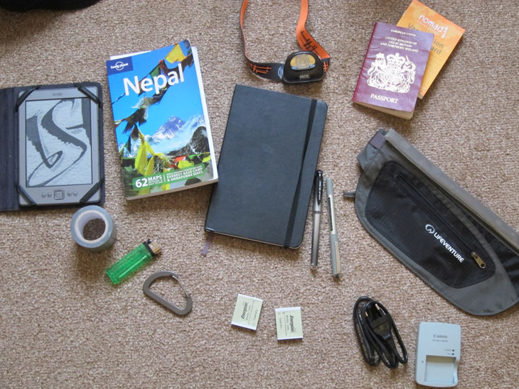

- Kindle
- Lonely Planet: Nepal
- Petzl Tikka XP Headtorch
- Notebook and pens
- Passport
- Vaccination card
- Moneybelt
- Digital Camera (not in photo, for obvious reasons …)
- Spare camera batteries and charger with European plug
- Duct tape
- Lighter
- Carabiner (not sure why … it just looked handy)
Afterthoughts:
My headtorch was invaluable. Even though I only used it for night-time walking once, I found it useful in numerous other circumstances: reading in bed, going to the toilet at night, rooms where the lights weren’t working and the occasional blackouts we had in hotels. Also handy for navigating to your room at night when it meant having to go outside in the dark to a separate building. The only thing I forgot was extra batteries, just in case. Take AA and AAA batteries even in you don’t have any need for them - they’re always a good way of making friends, haha.
I wasn’t entirely convinced about the moneybelt. It made me feel more conspicuous lifting my top up and fiddling about with zip than just lifting a wad of notes from my pocket. Also, as I nearly found out, it’s a good way to lose all your money in one go: going through customs, it got lost going through the scanner machine - I nearly shit myself. As I frantically looked around the area, one of the guards watching the monitors lifted it high into the air and asked if ‘this belongs to anyone’. I quickly grabbed it and strapped it on, vowing to be a tad bit more careful from now on.
I thought I had lost all of my spending money before even stepping onto the plane!
In the end, I gave up on wearing it and just stuck to using multiple pockets in my trousers for keeping day-to-day amounts of cash, while leaving a pile back at the hotel. By the time I was out on the trail, I didn’t have that much money left anyway, nor was I spending much.
Note that I chose to take the European plug for my battery charger. Plug sockets in Nepal have three holes, but (sorta) fit European plugs - they’re a bit loose, but they work.
Items to consider:
- Penknife - I never really needed one, but you never know
- Digital watch with altimeter and thermometer (also handy to have an alarm for wake-up calls)
- Pedometer - would have been interesting to know the little details
- Moneyclip (instead of a moneybelt)
- Smaller pocket sized notebook (the one I took was A5)